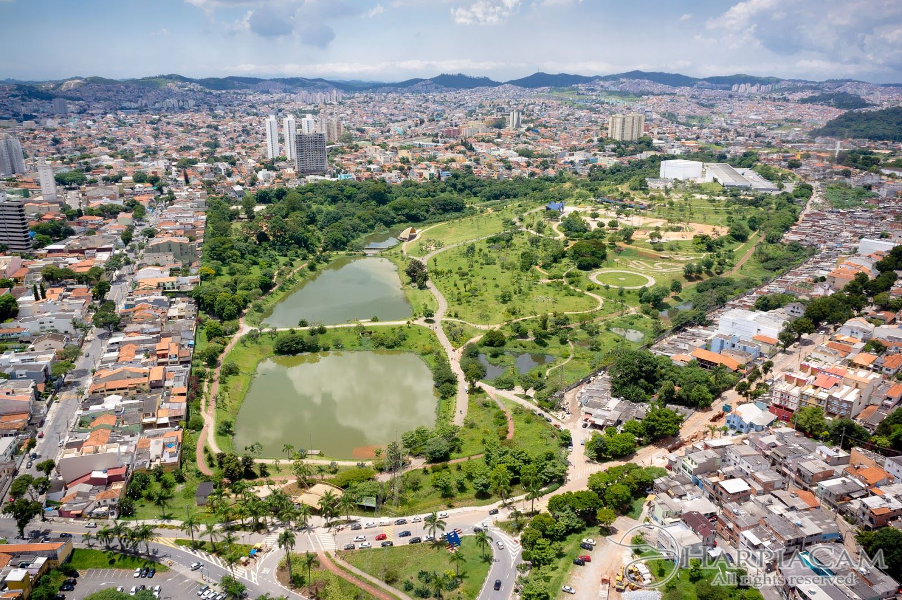
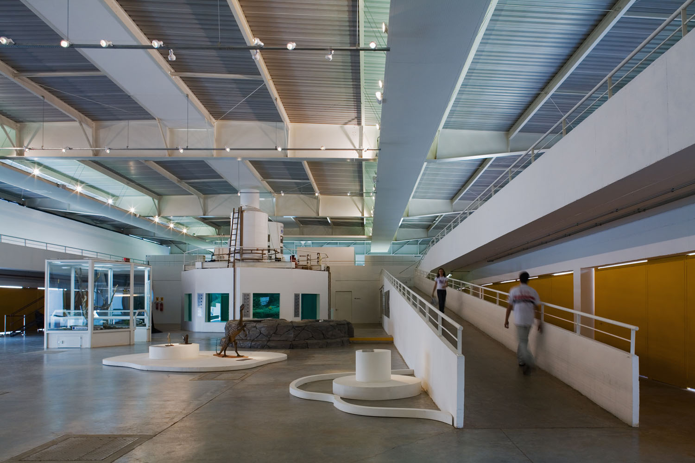
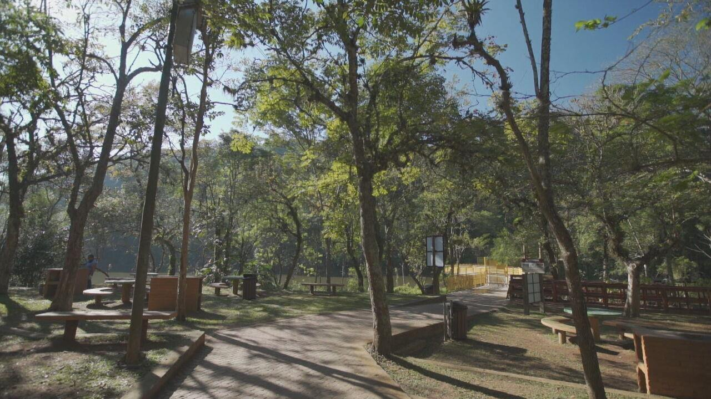

Santo André, localizada no coração do ABC Paulista, é uma cidade que une tradição industrial, desenvolvimento urbano e qualidade de vida. Reconhecida por sua forte economia, polo educacional e centros culturais, também se destaca por áreas verdes preservadas e opções de lazer que valorizam o contato com a natureza.
Parque Central – Um dos principais espaços de lazer da cidade, com lago, trilhas, playground e áreas de convivência.
📍 Endereço: R. José Bonifácio, s/n – Centro, Santo André – SP.
Sabina Escola Parque do Conhecimento – Espaço interativo com aquário marinho, pinguinário, planetário e exposições científicas para todas as idades.
📍 Endereço: R. Juquiá, s/n – Vila Eldízia, Santo André – SP.
Parque Natural Municipal do Pedroso – Área de preservação ambiental com trilhas e atividades voltadas ao ecoturismo.
📍 Endereço: Estrada do Pedroso, km 9 – Vila São Pedro, Santo André – SP.
